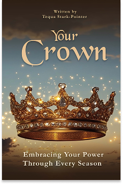
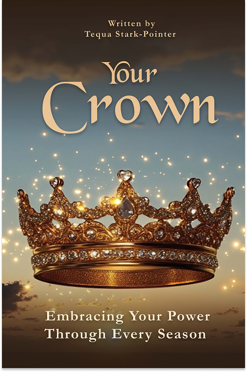
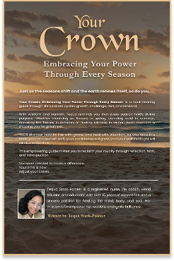
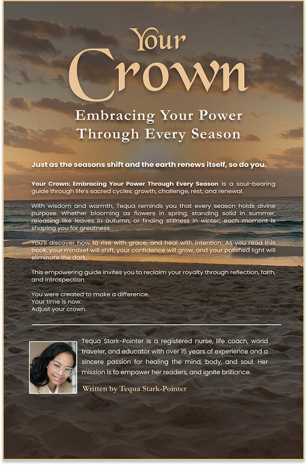

Just like the seasons shift and the earth renews itself, as do you and I.Your Crown: Embracing Your Power Through Every Season is an empowering journey through life’s natural cycles—growth,
challenge, rest, and renewal. Tequa Stark-Pointer reminds you that every season you walk through has divine purpose. Whether you are the tree leaves bloomin
g in the spring of new beginnings, standing strong in the heat of summer battles, shedding old leaves and fears in the crisp winds of fall, or finding deep strength
and resillence in the stillness of winter— as you experience each season, you remain resilience yo bear fruit your crown never slips.


An invitation to remember your royalty.
Just like the seasons shift and the earth renews itself, as do you and I.
Your Crown: Embracing Your Power Through Every Season is an empowering journey through life’s natural cycles—growth,
challenge, rest, and renewal. Tequa Stark-Pointer reminds you that every season you walk through has divine purpose.
Whether you are the tree leaves blooming in the spring of new beginnings, standing strong in the heat of summer battles,
shedding old leaves and fears in the crisp winds of fall, or finding deep strength and resilience in the stillness of winter—
as you experience each season, you remain resilient, you bear fruit, your crown never slips.
Foreword✧


Some books are meant to be read.
This one is meant to be felt.
Your Crown: Embracing Your Power Through Every Season is a powerful offering of wisdom, hope, and heart.
Through her lived experiences in healing, teaching, and leading, Tequa Stark-Pointer reminds us that true power is not given — it is remembered.
With every word, she invites us to rise, to trust ourselves, and to honor the sacredness of every season we walk through.
Her voice is both a balm and a battle cry — a reminder that our light was never lost, only waiting to be claimed.
This is more than a book.
It is a call to return home to yourself.
Prepare to be inspired.
Prepare to be awakened.
About the Author
About the Author
Tequa Stark-Pointer is a woman whose life reads like an extraordinary tapestry woven with courage, resilience, and unshakable purpose.
With over 15 years of clinical nursing experience across Emergency/Trauma, ICU, Perioperative Care, Pediatrics, Psychiatry, and Ambulatory Medicine, she has not just practiced healthcare — she has lived it, breathed it, and elevated it.
A proud graduate of Temple University, holding a Bachelor of Science in Nursing with a minor in Psychology, Tequa has consistently pushed the limits of her own knowledge and service.
More importantly, knowing the value of self worth and actuality — she is always leading with both her mind and her heart.
Her thirst for growth took her even further. In 2024, she embarked on medical studies in the Caribbean, determined to challenge herself in new ways.
Yet when her family needed her most, she made the ultimate act of love; returning home to care for her aging grandparents, exemplifying the selflessness that defines her life.
Tequa's vision transcends traditional medicine. As a Certified Life Coach and yoga instructor-in-training, she brings a whole-person approach to education, blending clinical science with the soulful art of healing.
Her teachings are infused with compassion, encouraging students to see the human body not just as a biological system, but as a living, breathing miracle.
A world traveler who has explored over 30 countries, Tequa’s work as a travel nurse and her passion for sociology and psychology have given her a rare lens on humanity.
Through every border crossed, every culture experienced, she has deepened her understanding of what connects us all — and how we can better serve, heal, and inspire one another.
Relentlessly dedicated to lifelong learning, Tequa builds spaces — whether in classrooms or in hearts — where empowerment, curiosity, and excellence are not just encouraged, but expected.
She is living proof that brilliance is born not just from intellect, but from compassion, perseverance, and an unwavering belief in the power of purpose.
To know her work is to witness the beauty of a life lived fully, faithfully, and fiercely.
Bring the Crown to Your Audience
Whether you’re hosting a conference, leading a women's group, or curating a space for growth — Tequa brings powerful messages of healing, purpose, and inner royalty.
Her words don’t just inspire. They awaken.